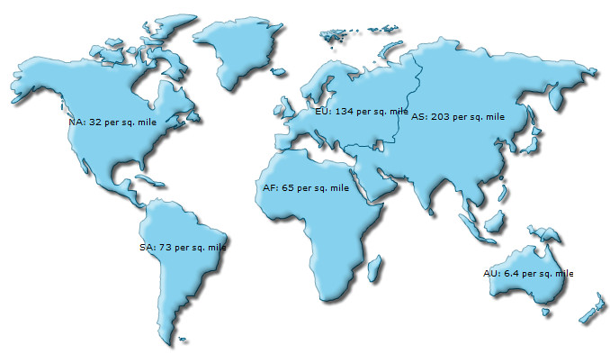

FusionMaps XT uses FusionCharts JavaScript Class that takes care of all the products of FusionCharts Suite XT including FusionMaps XT.
FusionCharts JavaScript Classes offer a number of functions for providing data to map and updating map data. The FusionCharts JavaScript Class supports data in XML or JSON format. The data can be assigned as URL or as String.
In this page we will discuss:
You can provide data to the map using various methods as shown below:
Using XML file as the map's data source
<html>
<head>
<title>My First map using FusionMaps XT</title>
<script type="text/javascript" src="Maps/FusionCharts.js">
</script>
</head>
<body>
<div id="mapContainer">FusionMaps XT will load here!</div>
<script type="text/javascript"><!--
var myMap = new FusionCharts( "Maps/FCMap_World.swf",
"MyMapId", "750", "400", "0" );
myMap.setXMLUrl ("Data.xml");
myMap.render("mapContainer");
// -->
</script>
</body>
</html>

In the above code, data is provided through an external XML file whose URL is provided using the setXMLUrl() function.
Click here to see implementation of other functions that do the same »
myMap.setChartData("Data.xml" , "xmlurl");
...
myMap.setChartDataUrl("Data.xml" , "xml");
FusionCharts can also use setDataUrl()to provide map data. This function has been deprecated.
Using XML String as the map data source
In case you have XML data as String in JavaScript, you can use the setXMLData() function to provide this XML String as shown in the code below:
// String containing map XML var strXML = ""<map><data><entity id='NA' value='515' />...</data></map>""; myMap.setXMLData(strXML);
Click here to see implementation of other functions that do the same »
myMap.setChartData(strXML , "xml");FusionCharts can also use setDataXML()to provide map data. This function has been deprecated.
Using JSON URL as the map data source
In case you are feeding JSON data to the map from a Url, you can use the setJSONUrl() function. See code below:
myMap.setJSONUrl("Data.json");
Click here to see implementation of other functions that do the same »
myMap.setChartData("Data.json" , "jsonurl");
...
myMap.setChartDataUrl("Data.json" , "json");
Using JSON Object or JSON stored as String in JavaScript
In case you are using JSON Object or JSON as String to be fed to map, you can use setJSONData() function. See code below:
var objJSON = { map : { ... } , data : { ... } ... } ; // Map JSON data
myMap.setJSONData( objJSON );
var strJSON = "{ map : { ... } , data : { ... } ... }" ; // map data as JSON String
myMap.setJSONData( strJSON );
Click here to see implementation of other functions that do the same »
myMap.setChartData(objJSON , "json"); ... myMap.setChartData(strJSON , "json");
The code samples here use URL of static XML/JSON files. Ideally, you will be using server side scripts to dynamically generate XML or JSON data, rather than build JSON or XML files. So, you can provide the URL of the script, which relays dynamically generated data to the map.
List of functions that help in providing data to map
Here is the list of FusionCharts JavaScript functions which can be used for providing data to the map in XML or JSON format:
- setXMLUrl(url) - This function specifies the URL of the XML data source. The XML is relayed to the map through the provided Url
- setXMLData(data) - This function provides data to the map in form of XML string. The XML String is passed as data parameter
- setJSONUrl(url) - This function specifies the URL of the JSON data source. The JSON is relayed to the map through this URL
- setJSONData(data) - This function provides data to the map in form of JSON String. The JSON String is passed as data parameter
- setChartDataUrl(url, format) - This function takes URL of the data source. It takes two parameters url and format. The format parameter accepts either xml or json. As per the value of the format parameter the function accepts data in the following manner:
- When the format is xml, the function will look for the Url of xml data from url parameter
- When the format is json, the function will look for the Url of JSON data from url parameter
- setChartData(data, format) - This function sets map data. It takes two parameters. The first is the data string itself. The second parameter, format, takes one of the four values - xml, xmlurl, json, jsonurl. As per the value of format parameter the function accepts data in the following manner:
- When the format is xml, the function will look for XML string in data parameter
- When the format is json, the function will look for JSON object or JSON string in data parameter
- When the format is xmlurl, the function will look for URL of the XML data in data parameter
- When the format is jsonurl, the function will look for the URL of JSON data in data parameter
- The deprecated functions are given below. While these are backward compatible and still work, going forward, we do not recommend using these.
- setDataURL(url) - This function specifies the URL of the XML data source. The URL is relayed to the map through the provided URL.
- setDataXML(data) - This function provides data to the map in form of XML string. The XML String is passed as data parameter.
Providing data to the map using compact rendering method
Apart from the above mentioned functions, data can be provided to the map using the compact rendering method. Using this method you can pass your data as XML/JSON URL or String. All you need to do is provide the settings correctly. The code snippets below show how to use the compact rendering mode:
Using XML file as the map data source
var myMap = FusionCharts.render( "Maps/FCMap_World.swf", "myMapId", "750", "400", "MapContainer", "Data.xml" , "xmlurl" );
Using JSON file as the map data source
var myMap = FusionCharts.render( "Maps/FCMap_World.swf", "myMapId", "750", "400", "MapContainer", "Data.json" , "jsonurl" );
Using XML String as the map data source
var myMap = FusionCharts.render( "Maps/FCMap_World.swf", "myMapId", "750", "400", "MapContainer", strXML , "xml" );
Using JSON Object as the map data source
var objJSON = { map : { ... } , data : { ... } ... } ; // map data as JSON object
var myMap = FusionCharts.render( "Maps/FCMap_World.swf", "myMapId",
"750", "400", "MapContainer", objJSON , "json" );
Using JSON String as the map data source
var strJSON = "{ map : { ... } , data : { ... } ... }" ; // map data as JSON String
var myMap = FusionCharts.render( "Maps/FCMap_World.swf", "myMapId",
"750", "400", "MapContainer", strJSON , "json" );
For more information on compact rendering mode read Constructor methods.
Let's render a sample map and then change its data (see code below). The map which renders initially shows the sales data for the Month of August. However, its data is changed to show sales for the month of September when a button is clicked. We have separate XML files for each month, The code is as follows:
<html>
<head>
<title>Update data for map</title>
<script type="text/javascript" src="../../Maps/FusionCharts.js">
</script>
</head>
<body>
<div id="mapContainer">FusionMaps XT will load here!</div>
<script type="text/javascript"><!--
var myMap = new FusionCharts( "../../Maps/FCMap_World.swf",
"myMapId", "750", "400", "0" );
myMap.setXMLUrl("Data.xml");
myMap.render("mapContainer");
function changeData()
{
var mapReference = FusionCharts("myMapId");
mapReference.setXMLUrl("Density.xml");
}
// -->
</script>
<input type="button" onClick="changeMonth();" value="Change Month">
</body>
</html>
In the above code we have created a map using population data as count in numbers, the data for which is in Data.xml. We have created an HTML button which calls a JavaScript function, changeData(). In this function we have:
- Tracked the reference of the map using FusionCharts("myMapId")
- Updated the map using setXMLData()function
- Passed "Density.xml", which contains data for September, to setXMLData()
The maps will look as follows:
|
| Map with population count data |
|  |
| Map with population density data |
Other Methods of updating data for maps
To update an existing map with data, all you need to do is get the map reference and a function from the list provided above. All of the functions listed above can then be used for updating the data of an existing map. Following code snippets illustrate the process:
var mapReference = FusionCharts("myMapId");
mapReference.setXMLUrl("newData.xml");
var mapReference = FusionCharts("myMapId");
mapReference.setJSONUrl("updatedJSON.json");
var mapReference = FusionCharts.items["myMapId"];
mapReference.setXMLData(newXMLString);
//newXMLString is a JavaScript String variable containing the map XML
var mapReference = FusionCharts.items["myMapId"];
mapReference.setJSONData(objJSON);
//objJSON is an Object containing map JSON
var mapReference = FusionCharts.items["myMapId"];
mapReference.setJSONData(strJSON);
//strJSON is a String which contains map JSON
Click here to see implementation of other similar functions »
var mapReference = FusionCharts.items["myMapId"];
...
mapReference.setChartDataUrl("updatedXML.xml", "xml");
...
mapReference.setChartDataUrl("updatedJSON.json", "json");
...
mapReference.setChartData("updatedXML.xml", "xmlurl");
...
mapReference.setChartData("updatedJSON.json", "jsonurl");
...
mapReference.setChartData(strXML, "xml");
...
mapReference.setChartData(objJSON, "json");
...
mapReference.setChartData(strJSON, "json");
Deprecated Functions
myMap.setDataURL("newData.xml");
var mapReference = getMapFromId("myMapId");
mapReference.setDataXML(newXMLString);
//newXMLString is a JavaScript String variable containing the map XML
var mapReference = FusionCharts.getObjectReference("myMapId");
mapReference.setDataURL("newData.xml");
myMap.setDataXML(newXMLString); //new XMLString is a string containing map XML
Your existing code (i.e. code used prior to FusionMaps XT) will continue to work as before.